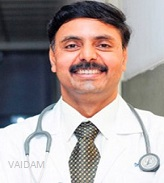

Dr. Satish Kumar S
QUALIFICATIONS
Consultant , MRCP, MRCP, Diploma, MBBS, 24 years of experience
Awards
1. Distinction, ISN-AINO, Nephro-Pathology Course
2. TANCRIT, 2013, ILBS
ABOUT DOCTOR
Dr. Satish Kumar S is an endocrinologist, diabetologist, neuroendocrinologist and bariatric physician with 24+ years of experience.
He has been awarded Best Consultant Endocrinologist in Bangalore, National Healthcare Excellence Awards in 2016.
His areas of expertise include treating diabetes, Gestational diabetes, Type 1 diabetes, weight management, Polycystic Ovarian Disease, Cholesterol problems, Hyper or Hypoparathyroidism, osteoporosis, Vitamin D and B12 deficiency and more.
Dr. Satish completed MBBS from Bangalore Medical College, Bangalore and Advanced Diploma in Public Health Administration from the Institute of Healthcare Administration, Chennai.
He further pursued MRCP (Internal Medicine) from Royal College of Physicians of Edinburgh, UK and MRCP from Federation of Royal College of Physicians of United Kingdom.
He has presented numerous papers and publications to credit.
SPECIALIZATION :
Diabetes,
Gestational diabetes,
Type 1 diabetes,
Weight management,
Polycystic Ovarian Disease,
Cholesterol problems,
Hyper or Hypoparathyroidism,
Osteoporosis,
Vitamin D and B12 deficiency.
WORK EXPERIENCE
HOD, Narayana Multispeciality Hospital, Bangalore, 2016
Consultant, Leeds Teaching Hospitals NHS(Trust), UK
Associate Professor, The University of Leeds, UK